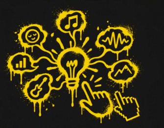
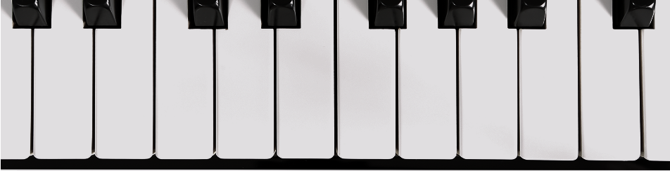

¿Cómo es el proceso de creación?
Investigadores de la UBA señalan que no ocurre de manera completamente autónoma.
1. Idea
Todo comienza con una intención, se selecciona género + emoción + instrumentos + estilo + tema. Ahí, la persona define qué quiere transmitir con la canción.
¡ES TU TURNO!

